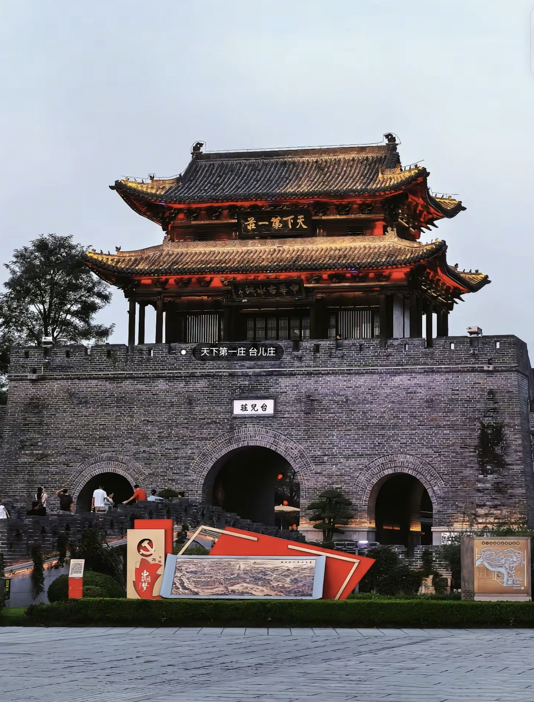
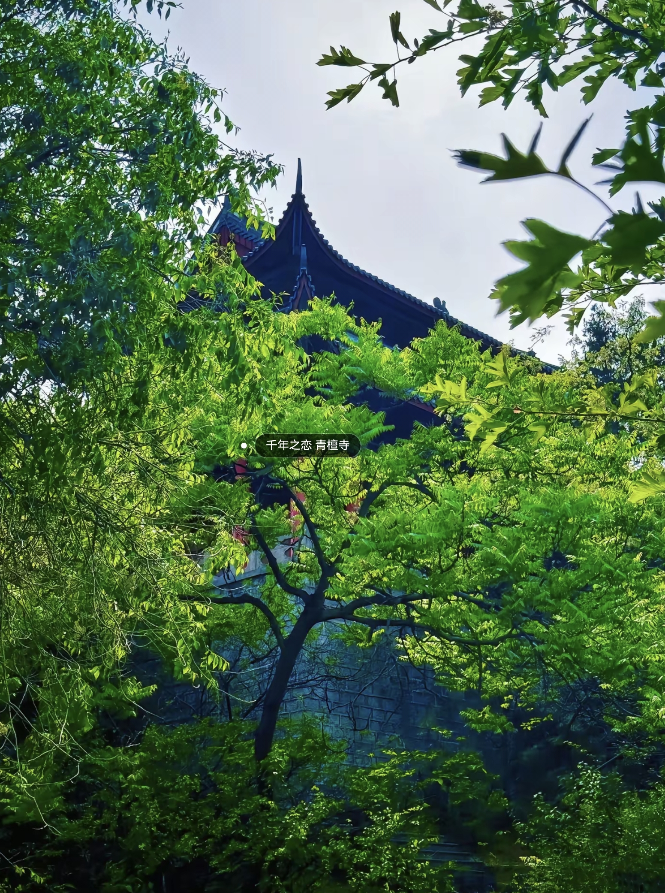
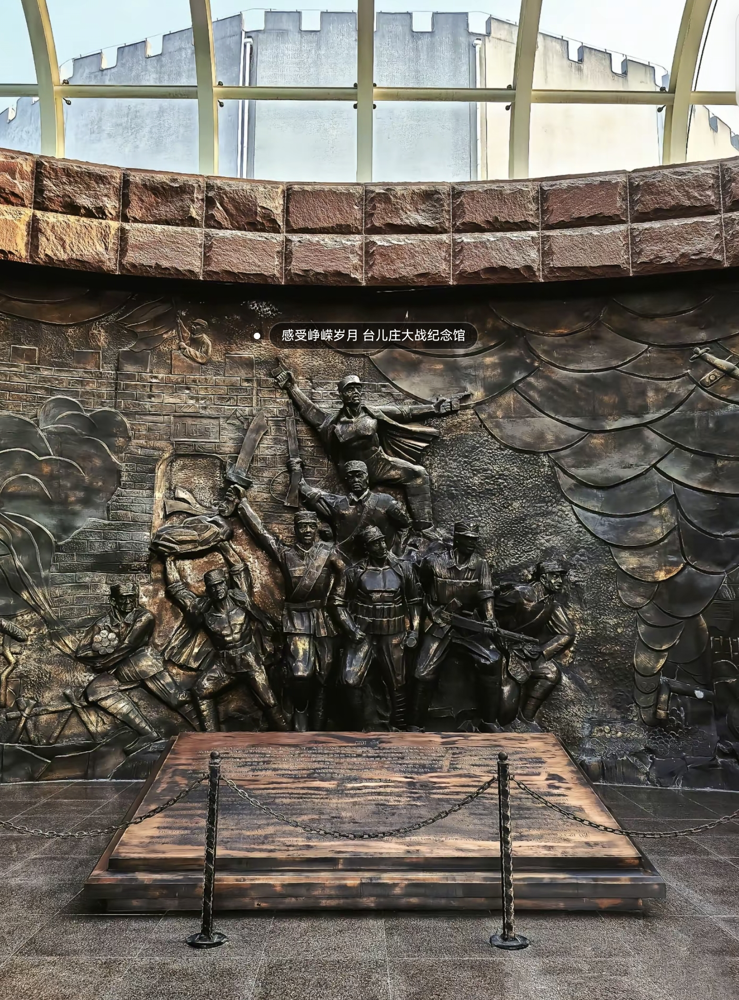

台儿庄古城
台儿庄古城位于京杭大运河的中心点，坐落在山东省枣庄市台儿庄区和鲁苏豫皖四省交界地带，是连接南北交通与文化的重要枢纽， 与徐州、临沂等城市遥相呼应，有 “天下第一庄” 之称，是国家 AAAAA 级旅游景区，被誉为 “中国最美水乡”。 2008 年，枣庄市启动台儿庄古城重建工程，经过数年精心打造，这座历史名城重现昔日辉煌。 古城占地面积 2 平方公里，其中一期工程核心区面积 75.8 公顷，共 11 个功能分区、8 大景区、29 个景点， 总建筑面积 37 万平方米。城内汪渠相连，水巷纵横，古驳岸、古码头等水工遗存保存完好， 3 公里的古运河被世界旅游组织称为 “活着的古运河”。 台儿庄古城汇集了八大建筑风格和世界五大宗教，拥有 30 多座庙宇，形成了南北交融、中西合璧的独特文化景观。 自开放以来，台儿庄古城吸引了大量国内外游客，成为 “游山东，必游台儿庄古城” 的热门景点。
青檀寺
枣庄青檀寺位于枣庄市峄城西 3.5 千米处，楚、汉两山的窄谷中，处于冠世榴园生态文化旅游区的核心位置， 与峄城的其他自然与人文景观相得益彰，是鲁南地区规模较大的一座佛教寺院，为国家 AAAA 级旅游景区。 它始建于唐代，原名云峰寺，因峡谷中长满青檀树而改名青檀寺。历史上，从唐代到宋元时期寺庙香火日盛， 明清时期更是文人墨客、达官贵人的游玩胜地。清末民初，寺毁于兵火，现存的青檀寺是 1985 年重建的。 寺内遍布古青檀树，枝干盘曲如虬龙，还有夫妻银杏树、舍利塔、天王殿、大雄宝殿等众多景点， 构成了独特的佛教文化景观。青檀寺内一年四季皆有景，春可赏景、夏可观花、秋能品实、冬能韵味， 每年五月的 “榴花节” 和九月的 “石榴采摘节” 更是吸引了大量游客前来，是养生休闲、旅游观光的理想之地。
台儿庄大战纪念馆
台儿庄大战纪念馆位于枣庄市台儿庄区运河街道办事处顺河街东侧，坐落在古运河畔，与台儿庄古城相依相存， 是为纪念抗日战争时期著名的台儿庄大战而建。该馆于 1992 年 10 月始建，1993 年 4 月开馆，2006 年底动工扩建， 是全国首批免费开放单位，也是全国首批爱国主义教育基地、全国百家爱国教育示范基地、中国侨联爱国主义教育基地。 馆前三十八级台阶寓意着 1938 年发生的台儿庄大战，二十四根立柱支撑的白色天棚象征着中华民族顶天立地。 纪念馆馆名由著名书法家启功先生题写，主体建筑物前方矗立着台儿庄大战纪念碑， 碑名由原国防部部长张爱萍将军题写，碑文由全国人大常委会副委员长程思远撰文、著名书法家权希军书写。 馆内共有三个展室，建筑面积 1400 平方米，陈列着台儿庄大战时中日双方的资料、文物千余件， 生动再现了那段可歌可泣的历史，让人们铭记历史、缅怀先烈，成为了爱国主义教育和历史文化传承的重要场所。
微山湖
枣庄微山湖地处苏鲁边界，位于枣庄市西北部，是中国北方最大的淡水湖，也是中国著名的铁道游击队的故乡， 与周边的湿地、渔村等共同构成了独特的生态与人文景观。微山湖水域辽阔，湖光山色美不胜收， 拥有丰富的自然资源和独特的生态系统，湖内物产丰富，鱼类、鸟类资源众多，是众多候鸟的栖息地。 沿湖两岸有着大片的芦苇荡，春夏之际，芦苇郁郁葱葱，犹如绿色的海洋；秋季来临，芦花纷飞，景色十分壮观。 微山湖文化园就坐落于此，园内的张良祠、普渡寺、国际书法碑林等仿古建筑气势恢宏，彰显着深厚的历史文化底蕴。 这里不仅是自然风光的宝库，也是体验渔家文化、感受红色历史的好去处，吸引着大量游客前来观光旅游、休闲度假， 成为了枣庄乃至山东的一张亮丽生态文化名片。